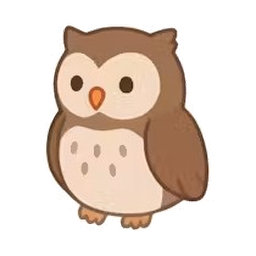
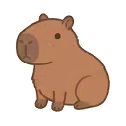
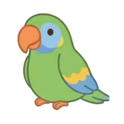

Rutas de aprendizaje
Cada materia se divide en los temas de tu grado. Escoge el que quieras estudiar, sin un orden obligatorio.
Sapiens Lumen convierte el estudio en una aventura: lecciones cortas, retos a tu medida, logros que celebrar y compañeros que te acompañan en cada paso.

Un espacio pensado para que aprender se sienta tan natural y divertido como jugar. Cada estudiante avanza a su ritmo y siempre sabe cuánto ha logrado.
Cada materia se divide en los temas de tu grado. Escoge el que quieras estudiar, sin un orden obligatorio.
Las asignaturas y los temas cambian según tu grado, para que lo que estudias sea justo lo que necesitas.
Gana medallas, sigue tus estadísticas y mira cómo crece tu conocimiento en cada materia.
Resuelve tus dudas en cualquier momento con un tutor virtual que te explica paso a paso.
Elige un compañero que te acompaña mientras estudias y celebra tus avances contigo.
Cambia el tema a tu gusto y estudia cómodo de día o de noche, desde el computador o el celular.
Convierte cada momento de estudio en un avance concreto, sin presión y con una guía para saber qué hacer después.
Explora las rutas de aprendizaje y elige el tema que más te interese, sin un orden obligatorio.
Las lecciones cortas y los retos hacen más fácil concentrarte y mantener el ritmo.
Consulta tu progreso y celebra cada lección completada mientras construyes una rutina de estudio.
Aprende algo nuevo, ponlo en práctica y reconoce todo lo que vas logrando.
Explora cada tema con explicaciones claras y avanza una idea a la vez.
Resuelve ejercicios para poner a prueba lo que acabas de aprender.
Sigue tus avances, gana logros y elige qué quieres aprender después.
Más de una docena de personajes esperan para acompañarte. ¡Elige el que más te guste!




Regístrate en un minuto con tu correo o con Google.
Escoge por dónde empezar y sigue la ruta de lecciones.
Resuelve ejercicios, sube de nivel y desbloquea medallas.
Resuelve tus dudas y descubre cómo empezar.
No. Puedes elegir la ruta o el tema que quieras estudiar y avanzar a tu propio ritmo.
Sí. La plataforma está pensada para que puedas estudiar desde el computador o el celular.
Crea una cuenta, elige por dónde quieres comenzar y explora tus lecciones.
Únete a Sapiens Lumen y descubre lo divertido que es aprender.